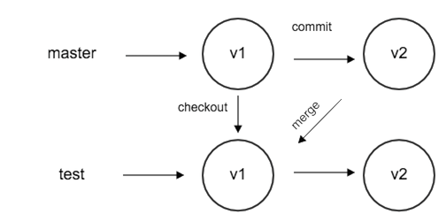
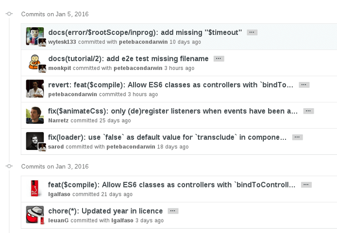

Web develop git & html
2016 Spring Dongyue Web Studio
by sway
Contents
- What is Git?
- Getting Start With Git
- Git Workflow
- Git Branch
- Teamwork
- HTML Introduce
What is Git?
The widely used source code management system for software development in the world.
Collaboration
When you work in a team, it’s necessary to integrate everyone’s work.
- copy and cover the files ?
- svn, working-copy collaboration ?
- git, repo-to-repo collaboration
The difference between svn and git

Benefit
- Detailed history.
- Peer review.
- better collaboration
Getting Start
How to install Git?
It's so easy, just enter the offical site.
offical siteThe basic commands you have to know
- git init
- git clone [url]
- git status
Workflow
- Submit your local changes
- Update your local repository
Submit
- git add
- git commit
- git push
Update
git pull
git pull = git fetch + git merge
Branch
- Diverge everyone's work
- Control the production environment
See the picture
Working with branches
- List branch: git branch
- Create branch: git branch [name]
- Switch branch: git checkout [name]
- Merge branch: git merge [name]
It looks like this
Recommand a website to learn git branch
Teamwork
How to use git effectively in teams?
Commit Message
A good message writing can:
- Speed up the reviewing process.
- Help us write a good release note
- Help the future maintainers
Commit Message
How?
- Write the accuracy first word in your message subject. Like fix, enhance, doc, style, bug ...
- Don’t take your subjective emotion. Like fuck, wo cao, !!! ...
- Know the meaning of your own message at least.
Here is a comparison of two teams using git

Every commit messages could become your black history ~
Maintain multiple branches
If you only have one branch...
- Boss: The clients say the product should add xxx function! You should add it before tomorrow!
- You add the function in your only branch hardly, you forget other programmer change architecture yesterday. Finally, you build a incomplete version and hand out to the clients...
- It’s a stupid tragedy...
Main branches
- master
- stable
Support branches
- feature
- bug
- hotfix
git host
HTML
It doesn't mean How to ...
- HyperText Markup Language
- Describe web documents
- Consist of different tags
A website to learn HTML